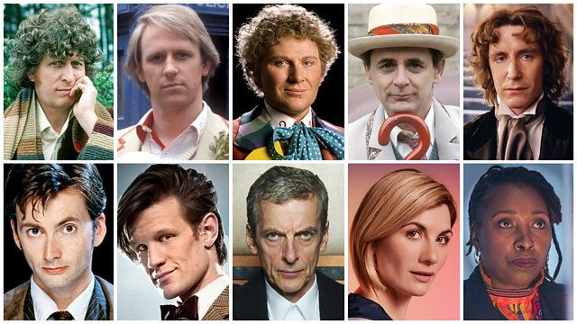

We are all stories in the end, just make it a good one
When it starts
The Who Shop started on the 1st of December 1984 in a warehouse in Wapping. As well as attending conventions and events all over the world, including the likes of San Diego Comic Con, The Who Shop has evolved and regenerated over the years into its present incarnation in Upton Park, East London. Run by wife and husband team, Alexandra and Kevan, The Who Shop, has been featured on numerous Television programmes and news articles. With the added TV & Film museum, The Who Shop has become a haven for all things Doctor Who for over the last 30 years, welcoming visitors from all over the world through their doors. If you want to vist us, you can find us hereTyler
When we lost our Wolfe back in March 2010, we thought we would wait until after Christmas and see what turns up at Battersea. Well fate stepped in when our lovely friend George was working with a young lady on set who worked at an animal rescue centre. I said I would look, famous last words. I took one look and he was the new companion.Bert
Since December 2019 we have had our friend Toby volunteering with us after not seeing him since the mid 90s. Bert goes everywhere with him, so we've adopted him as our K9 Companion. He loves everyone and thinks everyone has come here to see him, but most of the day he sleeps on the job. it's a hard life!